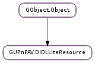

| get_audio_channels() | |
| get_bitrate() | |
| get_bits_per_sample() | |
| get_cleartext_size() | |
| get_color_depth() | |
| get_dlna_namespace() | |
| get_duration() | |
| get_height() | |
| get_import_uri() | |
| get_protection() | |
| get_protocol_info() | |
| get_sample_freq() | |
| get_size() | |
| get_size64() | |
| get_track_total() | |
| get_update_count() | |
| get_uri() | |
| get_width() | |
| get_xml_node() | |
| set_audio_channels(n_channels) | |
| set_bitrate(bitrate) | |
| set_bits_per_sample(sample_size) | |
| set_cleartext_size(cleartext_size) | |
| set_color_depth(color_depth) | |
| set_duration(duration) | |
| set_height(height) | |
| set_import_uri(import_uri) | |
| set_protection(protection) | |
| set_protocol_info(info) | |
| set_sample_freq(sample_freq) | |
| set_size(size) | |
| set_size64(size) | |
| set_track_total(track_total) | |
| set_update_count(update_count) | |
| set_uri(uri) | |
| set_width(width) | |
| track_total_is_set() | |
| unset_track_total() | |
| unset_update_count() | |
| update_count_is_set() |
| Name | Type | Flags | Description |
|---|---|---|---|
| audio-channels | int | r/w | The number of audio channels in this resource. |
| bitrate | int | r/w | The bitrate of this resource. |
| bits-per-sample | int | r/w | The sample size of this resource. |
| cleartext-size | int | r/w | The clear text size (in bytes) of this resource. |
| color-depth | int | r/w | The color-depth of this image/video resource. |
| dlna-namespace | int | r/w/c | Pointer to the DLNA metadata namespace registered with the resource. |
| duration | r/w | The duration (in seconds) of this resource. | |
| height | int | r/w | The height of this image/video resource. |
| import-uri | str | r/w | The import URI associated with this resource |
| protection | str | r/w | The protection system used by this resource. |
| protocol-info | GUPnPAV.ProtocolInfo | r/w | The protocol info associated with this resource |
| sample-freq | int | r/w | The sample frequency of this resource. |
| size | r/w | The size (in bytes) of this resource. | |
| size64 | int | r/w | The size (in bytes) of this resource. |
| track-total | int | r/w | The number of tracks of this resource. |
| update-count | int | r/w | The update count of this resource. |
| uri | str | r/w | The URI associated with this resource |
| width | int | r/w | The width of this image/video resource. |
| xml-doc | GUPnP.XMLDoc | w/c | The reference to XML document containing this object. |
| xml-node | int | r/w/c | The pointer to res node in XML document. |
None
| Name | Type | Access |
|---|---|---|
| parent | GObject.Object | r |
Bases: GObject.Object
| Returns: | The number of audio channels in the resource or -1. |
|---|---|
| Return type: | int |
Get the number of audio channels in the resource.
| Returns: | The bitrate (in bytes per second) of the resource or -1. |
|---|---|
| Return type: | int |
Get the bitrate (in bytes per second) of the resource.
| Returns: | The number of bits per sample of the resource or -1. |
|---|---|
| Return type: | int |
Get the sample size of the resource.
| Returns: | The size (in bytes) of the resource or -1. |
|---|---|
| Return type: | int |
Get the size (in bytes) of the resource.
| Returns: | The color depth of the resource or -1. |
|---|---|
| Return type: | int |
Get the color-depth of this image/video resource.
| Returns: | The pointer to DLNA namespace in XML document. |
|---|---|
| Return type: | libxml2.NsPtr |
Get the pointer to the DLNA metadata namespace registered with the XML document containing this object.
| Returns: | The duration (in seconds) of the resource or -1. |
|---|---|
| Return type: | int |
Get the duration (in seconds) of the resource.
| Returns: | The height of the resource or -1. |
|---|---|
| Return type: | int |
Get the height of this image/video resource.
| Returns: | The import URI or None. |
|---|---|
| Return type: | str |
Get the import URI associated with the resource.
| Returns: | The protection system in use by the resource or None. |
|---|---|
| Return type: | str |
Get the protection system used by the resource.
| Returns: | The protocol info associated with the resource or None. The returned object must not be unrefed. |
|---|---|
| Return type: | GUPnPAV.ProtocolInfo |
Get the protocol info associated with the resource.
| Returns: | The sample frequency of the resource or -1. |
|---|---|
| Return type: | int |
Get the sample frequency of the resource.
| Returns: | The size (in bytes) of the resource or -1. |
|---|---|
| Return type: | int |
Get the size (in bytes) of the resource.
| Returns: | The size (in bytes) of the resource or -1. |
|---|---|
| Return type: | int |
Get the size (in bytes) of the resource.
| Returns: | The total track count of the resource. |
|---|---|
| Return type: | int |
Get the total track count of this resource.
| Returns: | The update count of the resource. |
|---|---|
| Return type: | int |
Get the update count of this resource.
| Returns: | The of URI the resource or None. |
|---|---|
| Return type: | str |
Get the URI associated with the resource.
| Returns: | The width of this image/video resource or -1. |
|---|---|
| Return type: | int |
Get the width of this image/video resource.
| Returns: | The pointer to res node in XML document. |
|---|---|
| Return type: | libxml2.Node |
Get the pointer to res node in XML document.
| Parameters: | n_channels (int) – The number of channels |
|---|---|
| Returns: | The number of audio channels in the resource or -1. |
Set the number of audio channels in the resource. Passing a negative number will unset this property.
| Parameters: | bitrate (int) – The bitrate |
|---|---|
| Returns: | None. |
Set the bitrate (in bytes per second) of the resource. Passing a negative number will unset this property.
| Parameters: | sample_size (int) – The number of bits per sample |
|---|---|
| Returns: | None. |
Set the sample size of the resource. Passing a negative number will unset this property.
| Parameters: | cleartext_size (int) – The size (in bytes) |
|---|---|
| Returns: | None. |
Set the size (in bytes) of the resource. Passing a negative number will unset this property.
| Parameters: | color_depth (int) – The color-depth |
|---|---|
| Returns: | None. |
Set the color-depth of this image/video resource. Passing a negative number will unset this property.
| Parameters: | duration (int) – The duration (in seconds) |
|---|---|
| Returns: | None. |
Set the duration (in seconds) of the resource. Passing a negative number will unset this property.
| Parameters: | height (int) – The height |
|---|---|
| Returns: | None. |
Set the height of this image/video resource. Setting both width and height to a negative number will unset the resolution property.
| Parameters: | import_uri (str) – The URI as string |
|---|---|
| Returns: | None. |
Set the import URI associated with the resource.
| Parameters: | protection (str) – The protection system identifier as string |
|---|---|
| Returns: | None. |
Set the protection system used by the resource. Passing a negative number will unset this property.
| Parameters: | info (GUPnPAV.ProtocolInfo) – The protocol string |
|---|---|
| Returns: | None. |
Set the protocol info associated with the resource.
| Parameters: | sample_freq (int) – The sample frequency |
|---|---|
| Returns: | None. |
Set the sample frequency of the resource. Passing a negative number will unset this property.
| Parameters: | size (int) – The size (in bytes) |
|---|---|
| Returns: | None. |
Set the size (in bytes) of the resource. Passing a negative number will unset this property.
| Parameters: | size (int) – The size (in bytes) |
|---|---|
| Returns: | None. |
Set the size (in bytes) of the resource. Passing a negative number will unset this property.
| Parameters: | update_count (int) – The update_count |
|---|---|
| Returns: | None. |
Set the update count of this resource.
| Parameters: | uri (str) – The URI as string |
|---|---|
| Returns: | None. |
Set the URI associated with the resource.
| Parameters: | width (int) – The width |
|---|---|
| Returns: | None. |
Set the width of this image/video resource. Setting both width and height to a negative number will unset the resolution property.
| Returns: | True if set, otherwise False. |
|---|---|
| Return type: | bool |
Check whether the total track count property of this resource is set.
| Returns: | None. |
|---|
Unset the total track count of this resource.
| Returns: | None. |
|---|
Unset the update count of this resource.